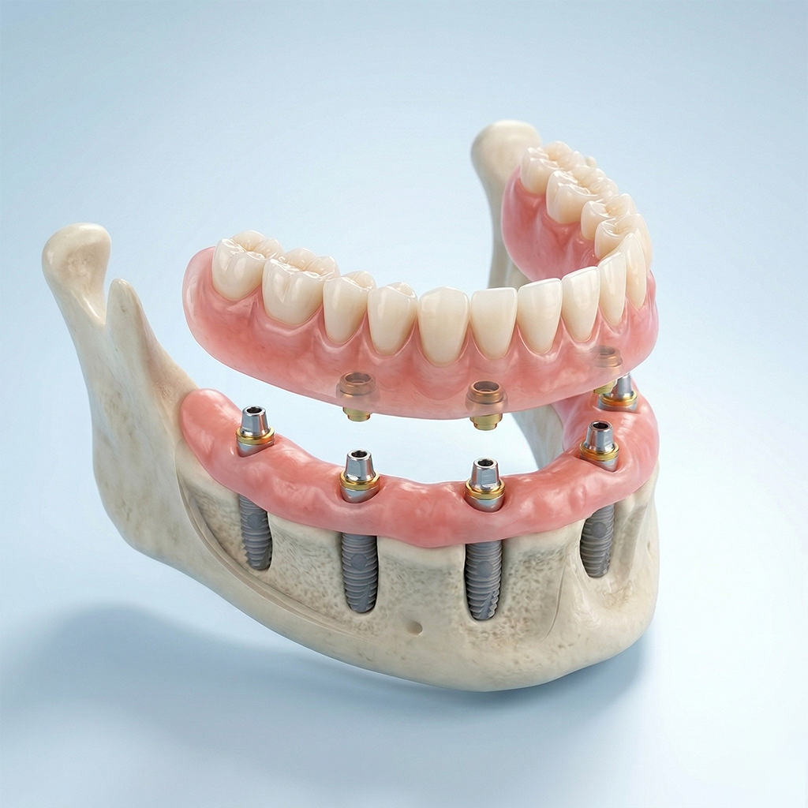

最新の入れ歯治療
もう、外れる心配はいらない。
もう、外れる心配はいらない。
一生ものの「噛む喜び」を。
インプラントオーバーデンチャーは、わずかなインプラントで入れ歯をしっかり固定する治療法です。これまでの入れ歯の常識を覆す安定感を提供します。

インプラントオーバーデンチャーは、わずかなインプラントで入れ歯をしっかり固定する治療法です。これまでの入れ歯の常識を覆す安定感を提供します。
硬いものが噛めない、入れ歯の間に食べ物が挟まるのがストレス。
人前でおしゃべりしている時や、笑った瞬間に入れ歯が動いてしまう。
入れ歯の金具が見えるのが恥ずかしい。実年齢より老けて見られる。

2〜4本のインプラントを顎の骨に埋め込み、そこに入れ歯を特殊なアタッチメントで「パチン」と固定する治療法です。
CT撮影を行い、お口の状態を精密に診断します。
最小限の本数のインプラントを埋入します。
固定された新しい生活が始まります。
| 項目 | 従来の入れ歯 | インプラントオーバーデンチャー |
|---|---|---|
| 安定性 | 外れやすく、ガタつくことがある | インプラントで固定され、動かない |
| 噛む力 | 自分の歯の20〜30%程度 | 自分の歯の70〜80%以上 |
| 見た目 | 金具が見えることがある | 金具がなく、非常に自然 |
| 違和感 | 大きくて異物感が強い | 小さく設計でき、違和感が少ない |
| 費用 | 安価（保険適用あり） | 中〜高（自由診療） |
まずは無料カウンセリングでお悩みをお聞かせください。
インプラントの無料相談に申し込む